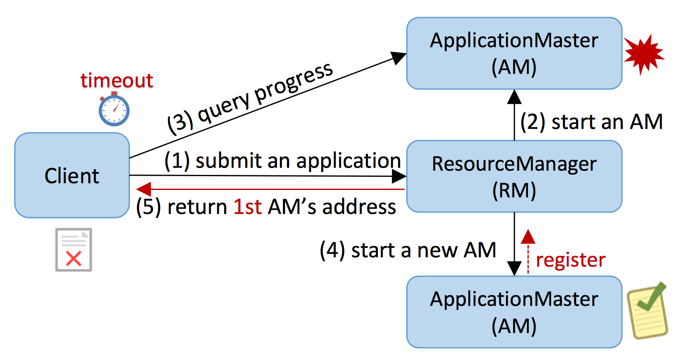

How are distributed bugs diagnosed and fixed?
What is distributed bug?
We consider a bug to be distributed, if its fault, error and failure involve more than one node.
A Distributed Bug Example

The above figure illustrates a real-word distributed bug MAPREDUCE-5488 from MapReduce.
In this bug,
(1) An application is submitted to ResourceManager (RM);
(2) The application gets executed by an ApplicationMaster (AM);
(3) The application status on AM will be periodically polled by its owner client.
At some point, if the AM crashes, both the RM and the client would notice that.
(4) The RM would launch a new AM on another node to recover and continue the application;
(5) The client would ask RM for the address of the new AM. Unfortunately, the client may sometimes get the old AM's address from RM, if the new AM's launching is unexpectedly slow.
As a result, the client would fail to connect to AM and report application failure in its log, even though the application is successfully completed by the new AM.